Scaling up graph neural networks
Lecture 3 · Jhony H. Giraldo · Télécom Paris, Institut Polytechnique de Paris
Lecture 2 built GCN and GAT and observed that one message-passing layer costs \(O(|\mathcal{E}|)\). On a graph with a few thousand nodes that is the end of the story. On the graphs that motivate the field — a social network, a recommender system, an academic citation graph — it is the beginning of one.
This note is about a single obstacle. The trick that makes deep learning scale, mini-batch stochastic gradient descent, does not transfer to graphs. We will see precisely why it fails, and then study the three standard repairs: sample the neighborhood (GraphSAGE), sample sub-graphs (Cluster-GCN), or remove the nonlinearity so that the graph work can be done once, in advance (SGC).
1 Learning objectives
After studying this note, you should be able to:
- explain why a uniformly sampled mini-batch of nodes destroys the graph structure;
- construct the computational graph of a node and state how its size grows with depth;
- describe GraphSAGE neighbor sampling and the trade-off controlled by the fan-out \(H\);
- describe Cluster-GCN, and identify the bias it introduces by discarding between-cluster edges;
- derive SGC by removing the nonlinearities from a GCN, and explain why it is so cheap;
- choose between these methods for a given graph, task, and memory budget.
2 Graphs in modern applications
The methods in this note exist because of a specific class of application.
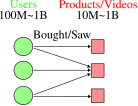
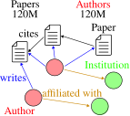
Check 1 — What these have in common
- Scale. Between \(10^{7}\) and \(10^{10}\) nodes, and between \(10^{8}\) and \(10^{11}\) edges.
- Task level. Node level (classify a user, item, or paper) and link level (recommend).
Lecture 2’s architectures apply unchanged. What does not apply is the training procedure.
3 Why the usual training recipe fails
Notation in this lecture
\(M\) here is the mini-batch size, not the edge count — Lecture 1 used \(M=|\mathcal{E}|\) and Lecture 4 will use \(M\) for the number of time samples. Edge count is written \(|\mathcal{E}|\) throughout this note. \(N\) is the number of nodes, \(K\) the number of layers, \(H\) the neighbor-sampling fan-out, and \(C\) the number of partitions.
Recall how a deep model is trained on a large dataset — a CNN on ImageNet, say. The objective is an average over \(N\) samples,
\[ \mathcal{L}(\boldsymbol{\Theta})=\frac{1}{N}\sum_{i=0}^{N-1}\mathcal{L}_i(\boldsymbol{\Theta}), \]
and stochastic gradient descent replaces it with an estimate from a mini-batch: sample \(M\ll N\) points, compute the loss on those \(M\), take a gradient step. This works because \(\mathcal{L}_i\) depends on sample \(i\) and nothing else.
On a graph, that assumption is exactly what fails.
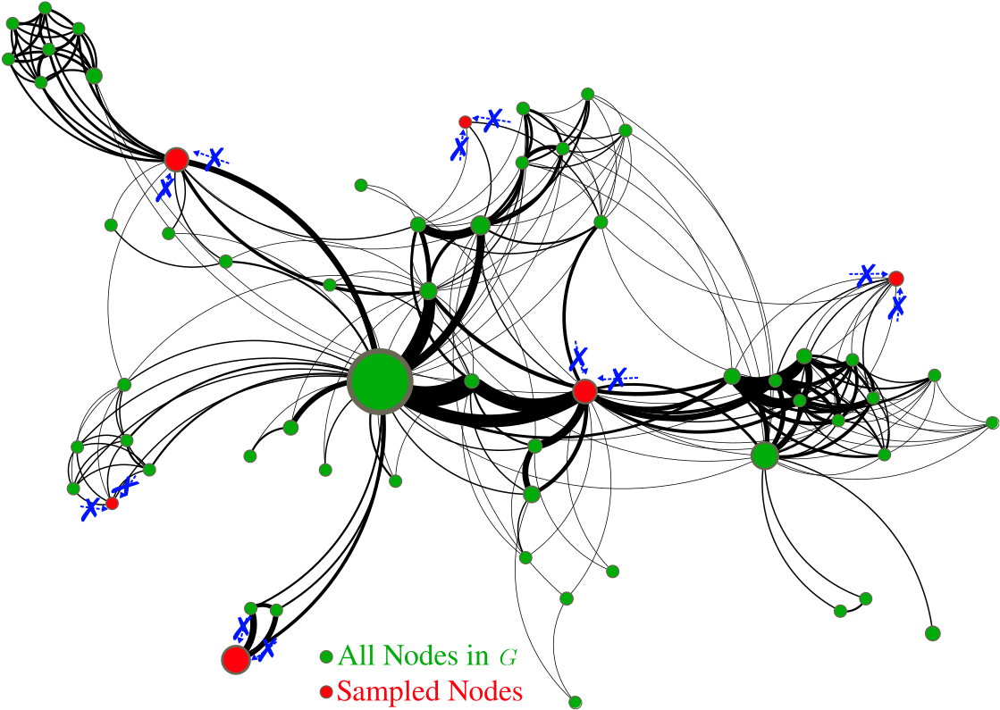
A GNN computes \(\mathbf{h}_i\) by aggregating over \(\mathcal{N}_i\). If none of node \(i\)’s neighbors is in the batch, there is nothing to aggregate, and the layer degenerates into a per-node linear map. The graph — the entire reason for using a GNN — has been sampled away.
This is not a qualitative worry; it is arithmetic. A uniform sample of \(M\) out of \(N\) nodes retains an edge only when both of its endpoints are drawn, which happens with probability roughly \((M/N)^2\).
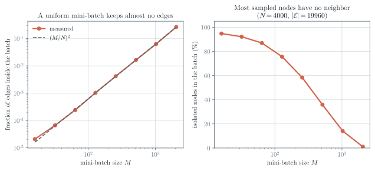
3.1 Why not just use the whole graph?
Full-batch training is the obvious alternative, and Lecture 2 showed that a GCN layer is cheap. The problem is memory, not arithmetic.
Worked example — The memory wall
Lecture 2 computed that a graph with \(N=25\,000\,000\) nodes and \(300\) neighbors per node needs about \(120\) GB as an edge list. A server CPU can hold that.
Training is normally done on a GPU, and accelerator memory is the binding constraint. Take an NVIDIA H200 as an illustrative device: 141 GB of HBM3e. The graph alone is 120 GB of that, before any node features, activations, gradients, or optimizer state — and a full-batch backward pass has to store activations for every node at every layer. It does not fit, and the next graph up will not fit on the next accelerator either.
(Nothing here requires a GPU: SGC’s preprocessing in Section 7 runs perfectly well on a CPU with far more RAM, which is part of its appeal. What requires a GPU is training a deep nonlinear model in reasonable time.)
And \(25\) million nodes is modest: a European customer graph at Amazon scale is larger.
So: uniform mini-batches destroy the structure, and full batches do not fit. Everything below is a way out of that squeeze.
4 The computational graph of a node
The way out starts with a change of perspective. Instead of asking which nodes are in the batch, ask what a single node’s embedding actually depends on.
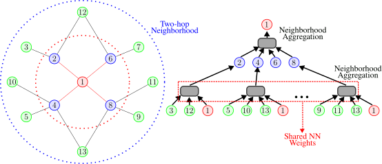
Definition 1 — Computational graph
The computational graph of node \(v\) for a \(K\)-layer message-passing model is the tree obtained by unrolling the recursion: the root is \(v\), its children are \(\mathcal{N}_v\), their children are their neighbors, and so on to depth \(K\). The same trainable weights are shared at every node of every level.
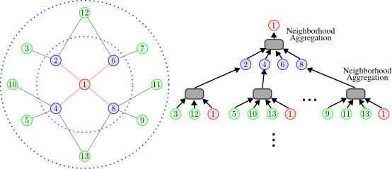
This is a genuine escape route. A node’s embedding needs its \(K\)-hop neighborhood, not the whole graph. So we can build one computational graph per node in the batch and evaluate them in parallel on a GPU.
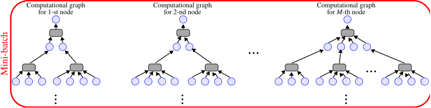
The stochastic training loop becomes:
- sample \(M\ll N\) nodes;
- for each sampled node, extract its \(K\)-hop neighborhood and build the computational graph;
- run message passing on those graphs to obtain the \(M\) embeddings;
- average the loss over the \(M\) nodes and take a gradient step.
4.1 The catch
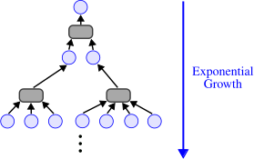
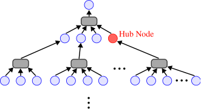
Aggregating a large fraction of the graph to produce a single node’s embedding defeats the purpose. Both problems have the same cure: do not use the whole neighborhood.
5 GraphSAGE neighbor sampling
Definition 2 — Neighbor sampling
Construct the computational graph by sampling at most \(H\) neighbors at each hop, rather than all of them. \(H\) is the fan-out.
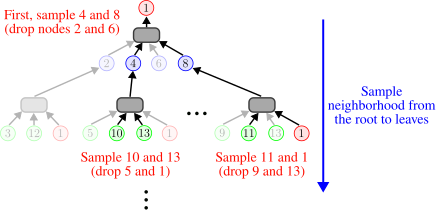
Four remarks matter in practice.
Check 2 — Reading the fan-out
- Size bound. A \(K\)-layer GNN touches at most \(H^{K}\) leaves, and \(\sum_{k=0}^{K}H^{k}\) nodes in total. The hub problem is gone: \(H\) caps the fan-out no matter how large a degree the sampler encounters.
- Variance trade-off. A small \(H\) is cheap but makes the neighborhood aggregate noisy, which destabilizes training. A large \(H\) is stable and expensive. \(H\) is the knob.
- Still exponential. \(H^{K}\) is bounded but it is bounded by an exponential. Adding one layer multiplies the cost by \(H\).
- Uniform is the default, and beating it takes real work. Note first what uniform sampling is: on an unweighted graph every neighbor in a row of \(\mathbf{D}^{-1}\mathbf{A}\) has probability \(1/d_u\), so “sampling from the random-walk matrix” is uniform neighbor sampling — not an improvement on it.
To sample non-uniformly you need genuinely non-uniform weights: edge weights, multi-step random-walk or personalized-PageRank scores, or a learned importance. And then the aggregate is no longer an unbiased estimate of the mean, so the sampling probabilities have to be divided back out — an importance-weighted estimator — or the layer computes something other than what it claims to.
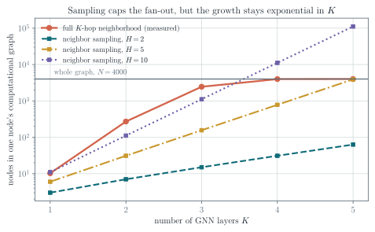
Check 3 — Neighbor sampling in one paragraph
Build one computational graph per node in the mini-batch; prune it by keeping at most \(H\) neighbors per hop; run message passing on the pruned tree. The batch now contains structure, the hub problem is capped, and the cost per node is bounded by \(\sum_k H^k\) — which is still exponential in the depth. Whether we need deep GNNs at all remains, as Lecture 2 noted, an open question.
6 Cluster-GCN
Neighbor sampling has a second weakness, and it is a subtle one: it recomputes the same thing over and over.
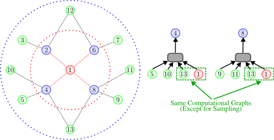
Compare this with full-batch training, which has the opposite profile.
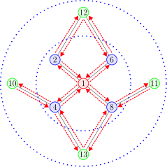
Check 4 — The tension
Neighbor sampling fits in memory but recomputes shared neighborhoods once per target node. Full-batch has no redundancy but does not fit in memory.
Cluster-GCN takes the layer-wise update from full-batch training and applies it to a piece of the graph small enough to fit.
6.1 Which sub-graphs?

Not every sub-graph will do. A GNN passes messages along edges, so a sub-graph is useful to the extent that it retains the edges of the original graph. The closer the retained connectivity, the closer the embeddings computed on the sub-graph are to the embeddings computed on the whole graph.

The observation that makes this practical is that real graphs are not homogeneous: social networks, recommender systems, and citation graphs all have community structure.

Definition 3 — Cluster-GCN
Pre-processing. Partition \(\mathcal{V}\) into \(C\) groups \(\mathcal{V}_1,\dots,\mathcal{V}_C\) with \(\bigcup_{i}\mathcal{V}_i=\mathcal{V}\), chosen to respect community structure. Each \(\mathcal{V}_i\) induces a sub-graph \(\mathcal{G}_i=(\mathcal{V}_i,\mathcal{E}_i)\).
Training (single-cluster form). Treat each \(\mathcal{G}_i\) as a mini-batch: run the ordinary layer-wise update inside it, compute the loss on its nodes, and take a gradient step.
Note that in general \(\bigcup_i\mathcal{E}_i\neq\mathcal{E}\), because between-group edges belong to no sub-graph (Chiang et al. 2019).
This is the simplified version, and it is the one to understand first. The paper’s actual method adds a step that matters.
Definition 4 — Cluster-GCN with stochastic multiple partitions
Partition into a larger number \(C\) of small clusters than a batch needs. At each step, sample a set \(\mathcal{B}\) of \(q\) clusters and build the batch sub-graph on \(\bigcup_{i\in\mathcal{B}}\mathcal{V}_i\), including the edges between the chosen clusters (Chiang et al. 2019).
Two things improve at once. Edges between clusters that happen to be sampled together are restored, so the batch is a better approximation of the full neighborhood. And the batch is a union of \(q\) clusters drawn from across the graph rather than one contiguous community, so it is a far more representative sample and the gradient variance drops.
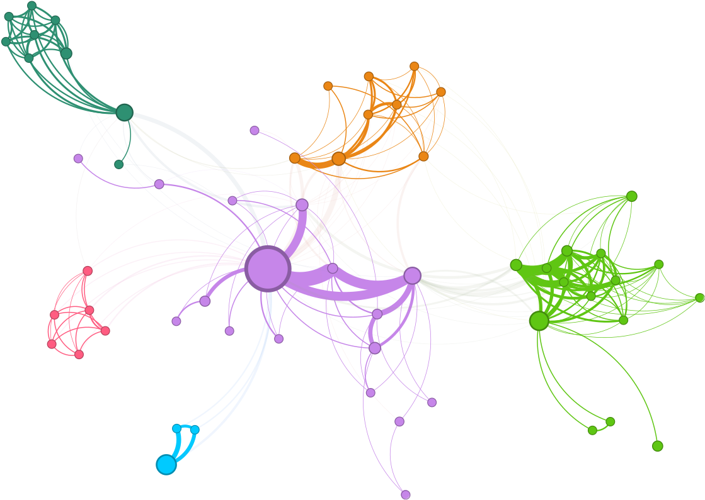
6.2 What Cluster-GCN loses
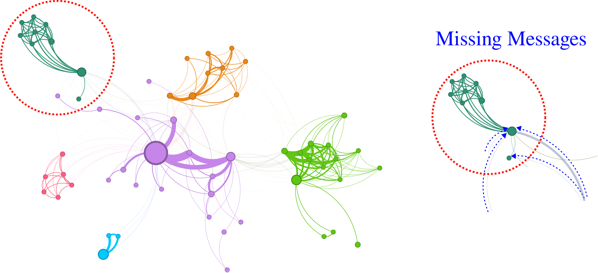
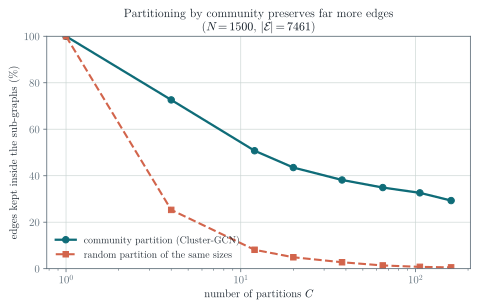
There is a second, less visible cost. The nodes in one cluster are similar to each other by construction, so a single cluster is not a representative sample of the graph. The gradient computed on it points in a systematically particular direction; from batch to batch the gradient fluctuates widely, and this high variance slows SGD’s convergence.
Both costs are what the multiple-partition scheme of Definition 4 is designed to reduce — and it reduces them without removing them. Edges between clusters that are not sampled together are still missing from that step, so the approximation remains; it is now controlled by \(q\) rather than absent.
Check 5 — Cluster-GCN in one paragraph
Partition the nodes into community-aligned groups, treat the induced sub-graph as a mini-batch, and run ordinary layer-wise message passing inside it. This removes the redundancy of neighbor sampling and is markedly more efficient for deep models.
The price is an approximation of the neighborhood: edges leaving the batch are not traversed. In the single-cluster form this is a fixed, systematic omission — the same edges are missing every time that cluster is used. Sampling several small clusters per batch (Definition 4) restores the edges among the chosen clusters and makes the batch representative, which is why it is the version actually used. The remaining bias is then a function of how many clusters you can afford per batch.
7 Simplifying the architecture: SGC
The two methods above keep the model and change the training. The third approach does the opposite: change the model so the expensive part can be done once, in advance.
7.1 Unrolling a GCN
Write the GCN propagation rule from Lecture 2 with \(\hat{\mathbf{A}}\) standing for the normalized adjacency with self-loops:
\[ \mathbf{H}^{(\ell+1)}=\sigma\!\left(\hat{\mathbf{A}}\mathbf{H}^{(\ell)}\mathbf{W}^{(\ell)}\right),\qquad \ell=0,\dots,K-1. \]
Unrolling \(K\) layers gives a nest of alternating propagations and nonlinearities:
\[ \mathbf{H}^{(K)} =\sigma\!\Big(\hat{\mathbf{A}}\,\sigma\big(\hat{\mathbf{A}}\,\sigma(\hat{\mathbf{A}}\cdots\mathbf{X}\mathbf{W}^{(0)}\cdots)\mathbf{W}^{(K-2)}\big)\mathbf{W}^{(K-1)}\Big). \]
Now delete every intermediate \(\sigma\) (Wu et al. 2019). The expression collapses:
\[ \mathbf{H}^{(K)} =\hat{\mathbf{A}}\big(\hat{\mathbf{A}}(\hat{\mathbf{A}}\cdots\mathbf{X}\mathbf{W}^{(0)}\cdots)\mathbf{W}^{(K-2)}\big)\mathbf{W}^{(K-1)} =\hat{\mathbf{A}}^{K}\,\mathbf{X}\,\underbrace{\mathbf{W}^{(0)}\cdots\mathbf{W}^{(K-1)}}_{\textstyle =\ \mathbf{W}}. \]
A product of linear maps is a linear map, so the whole stack of weight matrices collapses into a single \(\mathbf{W}\). Keeping only the final activation gives the Simple Graph Convolution:
Definition 5 — SGC
\[ \begin{aligned} \bar{\mathbf{Y}}=f(\mathbf{X};\mathbf{A},\boldsymbol{\Theta}) &=\operatorname{softmax}\!\left(\hat{\mathbf{A}}^{K}\mathbf{X}\mathbf{W}\right),\\[4pt] \hat{\mathbf{A}}&=\tilde{\mathbf{D}}^{-1/2}\tilde{\mathbf{A}}\tilde{\mathbf{D}}^{-1/2}, \qquad \tilde{\mathbf{A}}=\mathbf{A}+\mathbf{I}. \end{aligned} \tag{1}\]
7.2 Why this is so cheap
The term \(\hat{\mathbf{A}}^{K}\mathbf{X}\) is the diffusion sequence from Lecture 2, evaluated on the input features.
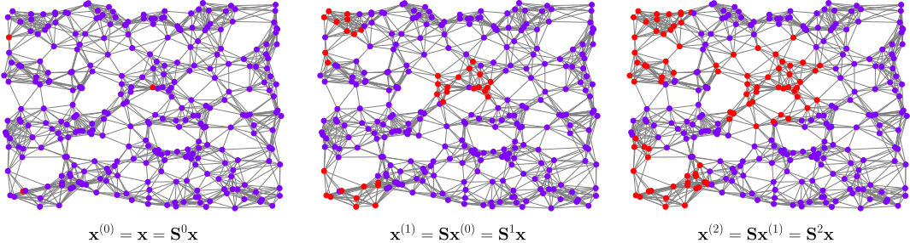
Compute it exactly as Lecture 2 insisted: recursively, never by forming a matrix power.
\[ \mathbf{X}\leftarrow\hat{\mathbf{A}}\mathbf{X}, \qquad \text{repeated } K \text{ times.} \]
Each step is one sparse matrix product costing \(O(|\mathcal{E}|F)\). And here is the decisive point: \(\mathbf{X}\) is data, not a parameter. Nothing in \(\hat{\mathbf{A}}^{K}\mathbf{X}\) depends on \(\mathbf{W}\), so it does not change during training. It is computed once, as pre-processing, and it can be computed on a CPU.
Check 6 — What is left after pre-processing
Let \(\tilde{\mathbf{X}}=\hat{\mathbf{A}}^{K}\mathbf{X}\), with row \(i\) the pre-processed feature vector of node \(i\). Then Equation 1 reads
\[ \bar{\mathbf{Y}}=\operatorname{softmax}(\tilde{\mathbf{X}}\mathbf{W}), \]
which is ordinary multiclass classification on the rows of a feature matrix. The graph has left the model entirely; it survives only inside \(\tilde{\mathbf{X}}\).
Three things follow. Any scalable classifier can be used — linear model, MLP, gradient boosting. Ordinary mini-batch SGD applies. And retrieving a node’s representation is a row lookup in constant time: no computational graph, no sampling.
Be careful about why mini-batching works here, because the obvious explanation is wrong. Preprocessing does not make the rows statistically independent — neighboring rows of \(\tilde{\mathbf{X}}\) share the features they were built from, and are strongly correlated. What it does is make each row fixed: a loss term can be evaluated without recomputing any neighbor’s activation. That is all mini-batch SGD needs. An unbiased gradient estimate for a finite sum over \(n\) terms requires only that the terms be sampled uniformly; it never required the terms to be independent random variables.
7.3 The price, and why it is often small
SGC has no nonlinearity between propagations, so it is strictly less expressive than a GCN. Yet on standard node-classification benchmarks it performs comparably. Why?
The answer is homophily, from Lecture 2. The pre-processing \(\mathbf{X}\leftarrow\hat{\mathbf{A}}\mathbf{X}\) repeatedly averages each node with its neighbors, so adjacent nodes end up with similar rows of \(\tilde{\mathbf{X}}\), so a linear classifier on \(\tilde{\mathbf{X}}\) tends to give adjacent nodes the same label. That is a strong prior — and on a homophilous graph it is the correct prior. Citation networks (a paper shares its citations’ category) and social recommendation (friends like the same films) satisfy it well.
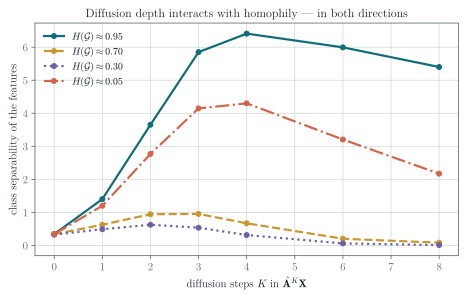
Check 7 — Why the lowest homophily is not the worst case
The measured curves refuse the tidy story, and the reason is instructive.
Diffusion by \(\hat{\mathbf{A}}\) scales each spectral component of the features by its eigenvalue. A strongly homophilous graph puts the class signal at the top of the spectrum, near \(\mu\approx1\), where repeated multiplication preserves it while everything else shrinks — the signal survives by being the slowest to decay.
A strongly heterophilous graph is close to bipartite, and a near-bipartite graph has eigenvalues close to \(-1\). The class signal now sits at the bottom of the spectrum, and \(|\mu|\approx1\) there too. It also survives — it just flips sign at every step. The separability measure used here is blind to that sign, and so is a linear classifier, which can simply learn a negative weight.
What is left in between? At \(H\approx0.5\) the class signal is spread across the middle of the spectrum where \(|\mu|<1\), and it decays. Diffusion helps when the labels align with an extreme eigenvalue and hurts when they do not, which is a statement about the spectrum, not about homophily as a scalar.
Two practical consequences. Too many steps eventually over-smooth even the good cases — every curve turns over. And \(H(\mathcal{G})\) on its own is a poor predictor: it is worth measuring, but it does not settle whether diffusion will help.
Check 8 — SGC in one paragraph
Remove the nonlinearities from a GCN and it collapses to a fixed feature transformation \(\tilde{\mathbf{X}}=\hat{\mathbf{A}}^{K}\mathbf{X}\) followed by a linear classifier. The graph work becomes a one-off pre-processing step, and everything after it is standard machine learning. It works well when the graph is homophilous, and it is the natural first thing to try on a graph too large for anything else. The same idea, under the name LightGCN, is used at scale in industrial recommender systems (He et al. 2020).
8 Choosing among the three
Check 9 — A decision rule
| keeps structure | memory | redundancy | gradient | depth cost | |
|---|---|---|---|---|---|
| Neighbor sampling | pruned neighborhood | \(O(H^{K})\) per node | high | biased for a nonlinear layer; variance grows as \(H\) shrinks | \(\times H\) per layer |
| Cluster-GCN | within-cluster only | one sub-graph | none | biased (missing cross edges) | linear |
| SGC | all of it, once | trivial after pre-processing | none | exact | one extra sparse product |
Start with SGC: it is a few lines, it runs on a CPU, and it tells you within minutes whether the graph carries usable signal. Reach for neighbor sampling when you need a genuinely nonlinear model and inductive behavior on unseen nodes. Reach for Cluster-GCN when the model is deep, the graph has strong community structure, and neighbor sampling’s redundancy has become the bottleneck.
9 Exercises
9.1 Exercise 1 — The \((M/N)^2\) law
Derive the probability that a given edge survives a uniform sample of \(M\) nodes from \(N\), without replacement, and show it is \(\frac{M(M-1)}{N(N-1)}\). Compare with Figure 5 and explain why the approximation \((M/N)^2\) is adequate.
9.2 Exercise 2 — Computational graph size
A graph has average degree \(\bar{d}=25\). Estimate the number of nodes in a 3-layer computational graph without sampling, and with \(H=5\). What fan-out would you need for a 4-layer model to stay under 2000 nodes?
9.3 Exercise 3 — The variance trade-off
Let a node have \(d\) neighbors with feature values \(x_1,\dots,x_d\) and population variance \(\sigma^2\). The exact mean aggregate is \(\bar{x}\). Compute the variance of the aggregate estimated from \(H\) uniformly sampled neighbors, with replacement (\(\sigma^2/H\)) and without replacement (the same, times the finite-population correction \(\frac{d-H}{d-1}\)). State which one a practical sampler uses and why the two agree when \(H\ll d\). Then use the result to justify Remark 2 in Check 2.
Finally, a subtlety worth stating: the sampled mean is an unbiased estimate of \(\bar{x}\), but a GNN layer applies a nonlinearity \(\sigma\) afterwards, and \(\mathbb{E}[\sigma(\hat{m})]\neq\sigma(\mathbb{E}[\hat{m}])\) in general. Is the layer output unbiased? Is the gradient?
9.4 Exercise 4 — Cluster-GCN’s bias
Take a graph with two communities joined by a single edge, and a node incident to that edge. Write the embedding this node receives under full-batch message passing and under Cluster-GCN with the two communities as clusters. Explain in one sentence why the difference is a bias and not merely noise.
9.5 Exercise 5 — Unrolling
Verify the SGC collapse explicitly for \(K=2\): expand \(\mathbf{H}^{(2)}\) with and without the intermediate \(\sigma\), and identify precisely which step fails when \(\sigma\) is present.
9.6 Exercise 6 — SGC parameter count
For a graph with \(N=10^{6}\) nodes, \(|\mathcal{E}|=10^{7}\) edges, \(F=500\) features, \(C=10\) classes, \(10^{4}\) labelled nodes and \(K=2\), count the parameters of SGC and of a two-layer GCN with hidden width \(64\).
Then count floating-point operations per training epoch for each. State your conventions before you start: count a multiply–add as one FLOP, take the backward pass as twice the forward pass, and treat a sparse product \(\hat{\mathbf{A}}\mathbf{Z}\) with \(\mathbf{Z}\in\mathbb{R}^{N\times F'}\) as \(|\mathcal{E}|F'\) FLOPs. Remember that SGC’s diffusion happens once, before training, not once per epoch. Explain where SGC’s advantage actually comes from — it is not the parameter count.
9.7 Exercise 7 — When SGC fails
Reproduce Figure 22 with scripts/figures/lecture_03_figures.py. The curves are not ordered by homophily — investigate why.
Compute the spectrum of \(\hat{\mathbf{A}}\) for the \(H\approx0.95\), \(H\approx0.50\) and \(H\approx0.05\) graphs and plot the three histograms. Project the class-indicator vector onto the eigenbasis in each case and report where its energy sits. Use that to predict which curves rise and which stay flat, then check your prediction against the measured curves. Finally: does a linear readout care whether the surviving component alternates sign from step to step? What does your answer imply about using \(H(\mathcal{G})\) alone to decide whether to diffuse?
10 Main takeaways
- The graphs that motivate graph ML are large enough that training, not the architecture, is the binding constraint.
- Uniform mini-batching fails on graphs: retained edges scale as \((M/N)^2\), so an ordinary batch is a set of isolated nodes.
- A \(K\)-layer GNN needs only a node’s \(K\)-hop neighborhood. Unrolling that into a per-node computational graph makes stochastic training possible.
- Computational graphs grow exponentially in \(K\) and explode at hub nodes. Neighbor sampling caps the fan-out at \(H\), trading variance for cost.
- Neighbor sampling recomputes shared neighborhoods. Cluster-GCN recovers full-batch efficiency inside community-aligned sub-graphs, at the cost of discarding cross-community edges and biasing the gradient.
- SGC removes the nonlinearities, collapsing the GCN into a one-off diffusion of the features followed by a linear classifier. It is extremely cheap and surprisingly strong.
- SGC’s accuracy rests on the homophily assumption. Measure \(H(\mathcal{G})\) before relying on it.
References and provenance
This web note is adapted from the Lecture 3 slides by Jhony H. Giraldo. The SGC collapse is derived step by step, the memory and complexity arguments are made explicit, and the qualitative claims about mini-batching, computational-graph growth, clustering, and homophily are replaced by measurements.
The diagrams reproduce the original course vectors. Figure 5, Figure 12, Figure 20, and Figure 22 are new and were computed with numpy and networkx; the script that produces them is scripts/figures/lecture_03_figures.py in this repository.